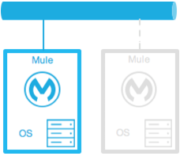
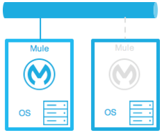
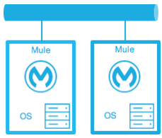
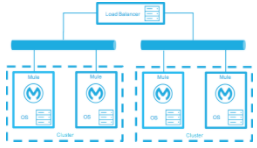
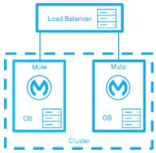
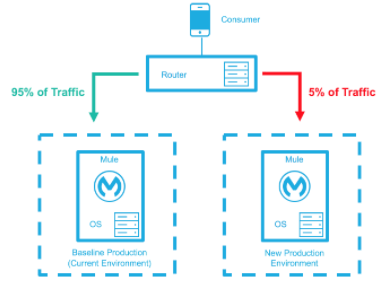
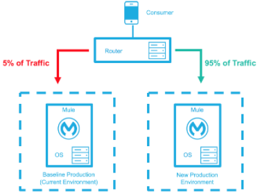
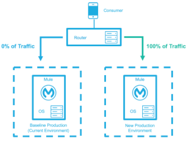
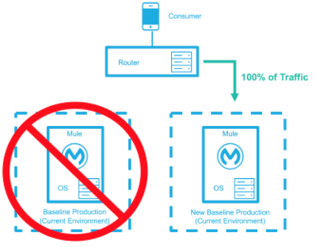

High Availability and Disaster Recovery
Introduction
Planned or unplanned, infrastructure and application downtime can come at any time, from any direction, and in any form. The ability to keep an organization operational during a technology outage, facility destruction, loss of personnel, or loss of critical third party services is critical to preventing irreversible damage to a business. With the increasing global shift to e-commerce models and their reliance on 24/7 application uptime, high availability (HA) and disaster recovery (DR) impact the financial health of organizations.
The following table shows how even the least amount of down time can add up to negatively affect an organization:
| Percentage Uptime | Percentage Downtime | Downtime Per Week | Downtime Per Year |
|---|---|---|---|
99% |
1% |
1.68 hours |
3.65 days |
99.9% |
0.1% |
10.1 minutes |
8.75 hours |
99.99% |
0.01% |
1 minute |
52.5 minutes |
99.999% |
0.001% |
6 seconds |
5.25 minutes |
High Availability Versus Disaster Recovery
-
High availability (HA) - The measure of a system’s ability to remain accessible in the event of a system component failure. Generally, HA is implemented by building in multiple levels of fault tolerance and/or load balancing capabilities into a system.
-
Disaster recovery (DR) - The process by which a system is restored to a previous acceptable state, after a natural (flooding, tornadoes, earthquakes, fires, etc.) or man-made (power failures, server failures, misconfigurations, etc.) disaster.
While they both increase overall availability, the notable difference is that with HA there is generally no loss of service. HA retains the service and DR retains the data, but with DR, there is usually a slight loss of service while the DR plan executes and the system restores.
Deploying Mule for HA and DR Strategies
You can deploy the Mule Runtime in many different topologies to address your HA and DR strategies. One method is through the use of clustering, which is described later in this document. Mule High Availability Clustering provides basic failover capability for Mule.
When the primary Mule Runtime becomes unavailable, for example, because of a fatal JVM or hardware failure or it’s taken offline for maintenance, a backup Mule Runtime immediately becomes the primary node and resumes processing where the failed instance left off.
After a system administrator recovers a failed Mule Runtime server and puts it back online, that server automatically becomes the backup node.
Seamless failover is made possible by a distributed memory store that shares all transient state information among clustered Mule Runtimes, such as:
-
SEDA service event queues
-
In-memory message queues
As you build your Mule application, it is important to think critically about how best to architect your application to achieve the desired availability, fault tolerance, and performance characteristics.
Creating Effective SLAs
The Service Level Agreement (SLA) outlines the specific definition of what is acceptable. See the slatemplate.com example SLA for how you can create agreements that help minimize downtime.
The basic definition of high availability is that the service is up and functioning, that is, properly processing requests and responses. This does not mean the service always operates at full capacity. Systems designed with high availability protect against interruptions and prevent outages from happening in the first place. The SLA identifies expectations for all stakeholders.
SLA Requirements:
-
Single points of failure are eliminated
-
Traffic/requests are redirected/handled
-
Detection of failures
For example a basic service may have the following SLA:
-
The normal operation of the service handles 1000 transactions per sec with 1 sec response times.
-
The total downtime per year will be 99.5% or 1.83 days.
-
Minimal acceptable service impact level is 100 transactions per sec with 1 sec response times for a period of 2 hours a week.
See also:
High Availability Options
You can achieve high availability through the use of clustering and/or load balancing of the nodes. Depending on the defined SLA, four HA options are possible with Mule:
| Often these options are associated with a disaster recover strategy. |
Cold Standby
| Diagram | Description | Downtime |
|---|---|---|
 |
The Mule environment is installed and configured, however one or more operating systems are not running. This can be a backup of a production system/virtual machine. The environment of the operating system plus the Mule Runtime has been started after an outage is detected. |
Some - The time it takes to start the environment and direct traffic. |
Warm Standby
| Diagram | Description | Downtime |
|---|---|---|
 |
The Mule environment is installed and configured. However the Mule Runtimes are not running; only the operating systems. The Mule Runtime is started after an outage is detected. |
Little - The time it takes for the Mule Runtimes to start and to route traffic to the environment. |
Hot Standby - Active-Passive
| Diagram | Description | Downtime |
|---|---|---|
 |
The Mule environment is installed, configured, and fully running. However, it is not processing requests until an outage is detected. |
Minimal to none - The time to route traffic to an environment. |
Active-Active
| Diagram | Description | Downtime |
|---|---|---|
 |
Load Balanced clustered environments There are two or more Mule environments (each environment has its own cluster) that are fully operational. The load balancer is directing traffic to all of the environments. |
None - There is no service downtime. |
 |
Load Balanced single clustered environment There are two or more Mule environments, however they are part of the same clustered environment. To achieve this scenario, the network latency between environments must be less than 10ms. |
None - There is no service downtime. |
High-Availability Deployment Models
Active-Active Clustering Deployment Model
It is plausible that two nodes in a clustered and/or load balanced can support 1,500 TPS with one second responses. In this state the normal operation of the SLA is being met. If a node fails the service is impacted. However, the impact does not breach the SLA because the node is able to handle 700 TPS with one second responses; well above the agreed upon acceptable impact level.
Distribute the load evenly among multiple Mule nodes:
-
All nodes offer the same capabilities
-
All nodes are active at the same time.
Costs
Vary depending on SLA requirements. This model needs 2 nodes to satisfy SLA. If the SLA’s acceptable service impact changes to the terms stated in the normal operations then at a minimum the environment will need 3 nodes to accommodate 1 node failure. More nodes may be required depending on the probability of not having at least 2 nodes running.
Active-Active Clustering Fault Tolerance Deployment Model
The basic definition of fault tolerance is a failure within the system does not impact the service at all. This differs from high availability as service impact and downtime is tolerated.
Fault tolerance differs from high availability by providing additional resources that allow an application to continue functioning after a component failure without interruption. Fault tolerant environments are more costly than high available environments.
The degree of fault tolerance requires the probability of system failures. Take the SLA example highlighted under high availability and make the minimal acceptable service impact level match the normal operation requirement.
The new overall SLA now requires the system to be able to handle 1000 transactions per sec with 1 sec response times, zero downtime, and zero service impact.
If the probability of having more than 1 node fail is low then the architecture would simply require 3 nodes. However, if the probability of more than 1 node is higher than acceptable, more than 3 nodes will be required to accommodate multiple failures.
Costs
More costly due to the required redundancy in order to meet defined SLA.
Zero Downtime Deployment Model
The goal is to be able to quickly make changes to the environment without impacting the SLAs; including upgrading infrastructure and the applications running on the infrastructure. Typically zero downtime deployments leverage a side-by-side deployment, where the old and new coexist for a short period of time. This is in contrast to an in-place deployment where the service may experience reduced capacity to complete downtime.
Gartner defines continuous operations as “those characteristics of a data-processing system that reduce or eliminate the need for planned downtime, such as scheduled maintenance. One element of 24-hour-a-day, seven-day-a-week operation”.
Refer to this article for a complete description and a common solution.
The baseline production environment is the current operating environment. A new environmentis created with the changes (upgraded runtimes, configurations, new applications, etc). A small percentage of traffic flows to the new environment and increases as the confidence in the new environment increases. The baseline production environment continues its use until the new environment is fully operational (it is handling 100% of the traffic). Once the new environment is accepting all traffic, it becomes the new baseline production environment and the previous baseline production environment terminates.
The example below is assuming each environment is using the same number of Mule runtimes and cores. It is plausible that the new environment may have more or less number than the baseline environment.
| Deployment Step | Diagram |
|---|---|
New Production Environment deployed and a small percentage of traffic is routed to new environment. |
 |
Confidence in the new environment continues to increase and more traffic is routed to it. |
 |
All traffic has been routed to the new environment. |
 |
All traffic has been routed to the new environment, which has been promoted to the baseline production environment; the previous baseline environment has been terminated. |
 |
Costs
This deployment method may temporarily add capacity to the service (can be a few minutes, hours, or days).
Disaster Recovery
How quickly can your company get back to work after an IT emergency?
Disaster recovery (DR) is the process by which a system is restored to a previous acceptable state, after a natural or man-made disaster. It is important that the selection of the appropriate DR strategy be driven by business requirements. For DR, use measurable characteristics, such as Recovery Time Objective (RTO) and Recovery Point Objective (RPO), to drive your DR plan.
Disaster recovery is about your Recovery Point Objective (RPO) and your Recovery Time Objective (RTO). RPO is the "point" that you return to after an IT disaster. For example, if you backup every 24 hours, your RPO is a maximum of 24 hours ago. RTO, on the other hand, is how quickly you can restore to your RPO and get back to business. This includes activities like the time it takes to get your spare equipment to start running your backups if your primary equipment isn’t working.
System backups are a major component of a solid disaster recovery program. There are three types of recovery: cold, warm, and hot.
| Term | Definition | Example |
|---|---|---|
Recovery Time Objective (RTO) |
How quickly do you need to recover this asset? |
1 min? 15 min? 1 hr? 4 hrs? 1 day? |
Recovery Point Objective (RPO) |
How fresh must the recovery be for the asset? |
Zero data loss, 15 mins out of date? |
Topics
Disaster Recovery with Mule
Anypoint Cloudhub provides disaster recovery for application and hardware failure by re-deploying the application within the region. If the application uses multiple workers, CloudHub deploys them in separate availability zones within the same region, thereby providing HA across availability zones. The distance between the availability zones is variable and in general it cannot be assumed that they are 350 miles or more apart. If an application uses a single worker, when the availability zone comes down, it needs to be brought up manually. Alerting can be setup when any failure occurs.
CloudHub uses Amazon AWS for its cloud infrastructure. hence the CloudHub availability is dependent on Amazon. The availability and deployments in CloudHub are broken into different regions which in turn point to the regions in Amazon. If an Amazon region goes down, the applications within the region are unavailable and not replicated in other regions (automatically).
If the US East region goes down, the CloudHub management UI as well as the various rest services that enable deployments would be down until the region comes back. This is important to know as it could mean that new apps can not be deployed while US East is down.
CloudHub provides an internal messaging mechanism, in the form of persistent queues (leveraging Amazon SQS), that can be used for message reliability. The persistent queues are highly available within a region. However, these would be lost when the region comes down which could result in some data loss (usually a few second or minutes depending on the use case).
Certain CloudHub modules - object store, application settings and Insight related information are maintained in the US East for all applications irrespective of the region they are deployed in. If the US East region comes down, the object stores would not be available and data within the object store is reset once the region comes back.
VPC setup is at a region level. So if a region comes down, unless a VPC setup has been previously done for the other region, the VPC is unavailable.
Anypoint CloudHub Default Deployment Model
If the application uses multiple workers, CloudHub by default deploys the workers in separate availability zones providing HA across availability zones. The distance between the availability zones is variable and in general does not exceed more than 350 miles apart.
If an application uses a single worker, when the availability zone goes down, it needs to be brought up manually. Alerting can be set up within status.mulesoft.com to receive alerts when a failure occurs in an availability zone or region level.
Keep Integrations Stateless
As a general design principle it is always important to ensure the integrations are stateless in nature. This means that no transactional information is shared between various client invocations or the executions (in case of scheduled services). If some data has to be maintained by the middleware due to a system limitation, it should be persisted in an external store such as a database or a messaging queue and not within the middleware infrastructure or memory. It is critical to note that as we scale, especially in the cloud, the state and resources used by each worker/node should be independent of the other worker. This model ensures better performance, scalability as well as reliability.